වයඹ පළාත | வடமேல் மாகாணம்
Ancient rock capitals, the premier kitesurfing winds of Kalpitiya, massive pods of spinner dolphins, and the sprawling wildlife sanctuaries of Wilpattu.
Granite monadnocks and rocky hills in the east, transitioning to flat sandy plains, coconut plantations, salt pans, and coastal spit lagoons in the west.. Semi-arid along the Puttalam coast to tropical dry-intermediate in Kurunegala (27°C - 33°C).
Rich medieval kingdom heritage including Yapahuwa, Panduwasnuwara, and Dambadeniya, the historic silver monastery of Ridi Viharaya, ancient Munneswaram Kovil, and Dutch colonial fortresses.
Wilpattu National Park, Bar Reef Marine Sanctuary, Anawilundawa Ramsar Wetland Bird Sanctuary, Kalpitiya Lagoon, and Bathalagoda Tank.
Each district possesses unique landscapes, cultural attractions, and local hospitality.
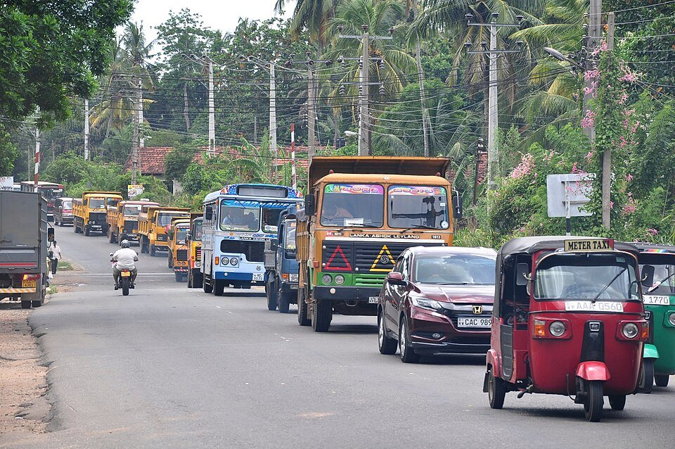
District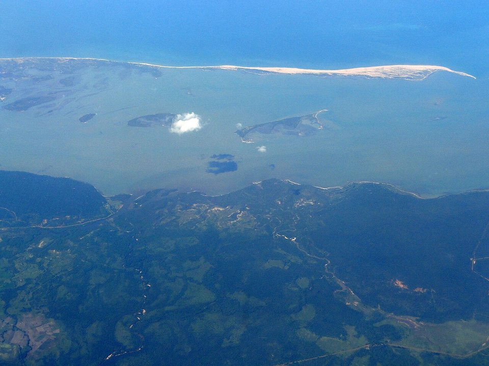
DistrictDiscover the signature highlights and attractions across this province.
The 13th-century rock citadel rising 100 meters above the plains, famous for its magnificent ornamental stone stairway carved with Chinese-influenced lions and dancers.
A monumental 316-meter granite monolith shaped like a crouching elephant looming over Kurunegala, crowned by a majestic 27-meter white Samadhi Buddha.
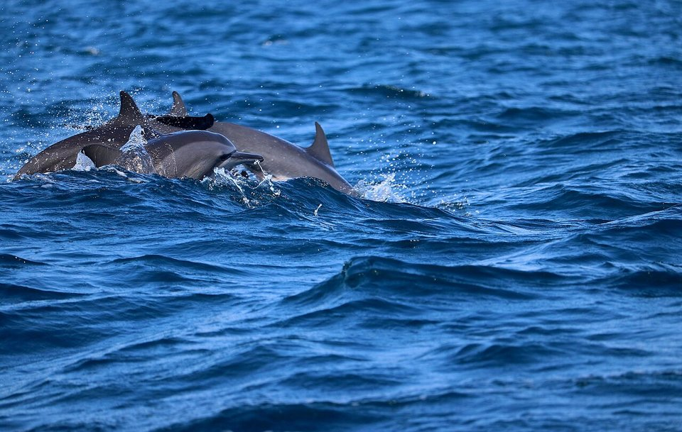
Marine & Diving AttractionsAsia's premier kitesurfing destination and marine mammal sanctuary, where boat tours encounter massive pods of hundreds of acrobatic spinner dolphins.
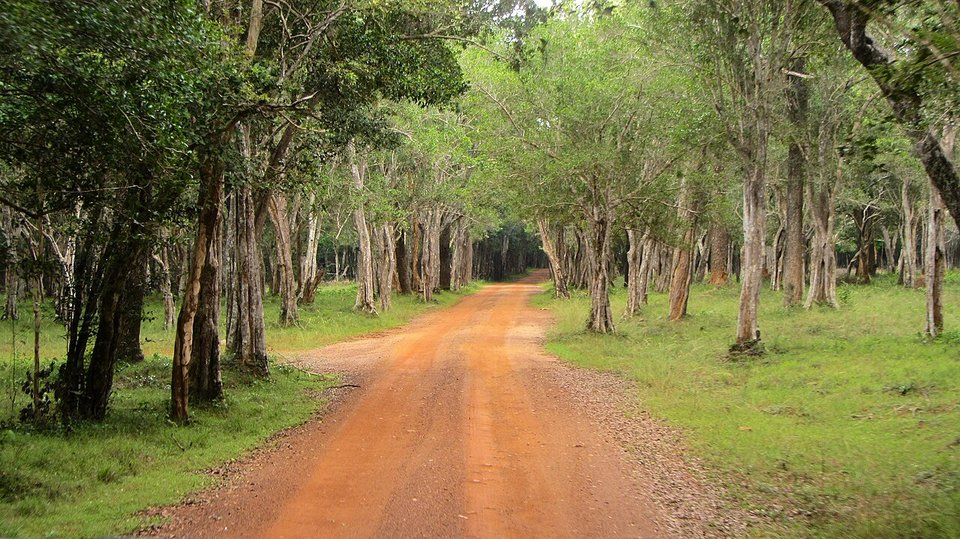
National ParksSri Lanka's largest and oldest national park, famous for 106 natural sand-rimmed rain-fed lakes ('villus'), dense monsoon forests, leopards, and sloth bears.
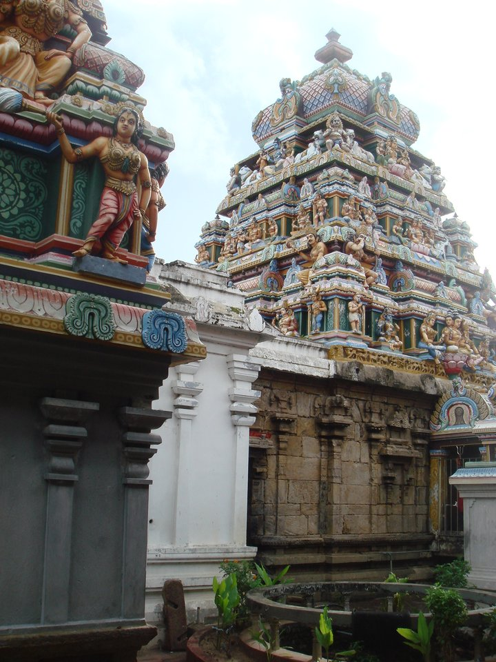
Temples & Religious SitesOne of the five ancient Pancha Ishwaram holy Shiva temples of Sri Lanka dating back to 1000 BCE, associated with Lord Rama in the Ramayana epic.
Serene, uncrowded locations that reveal the true unspoiled essence of the region.
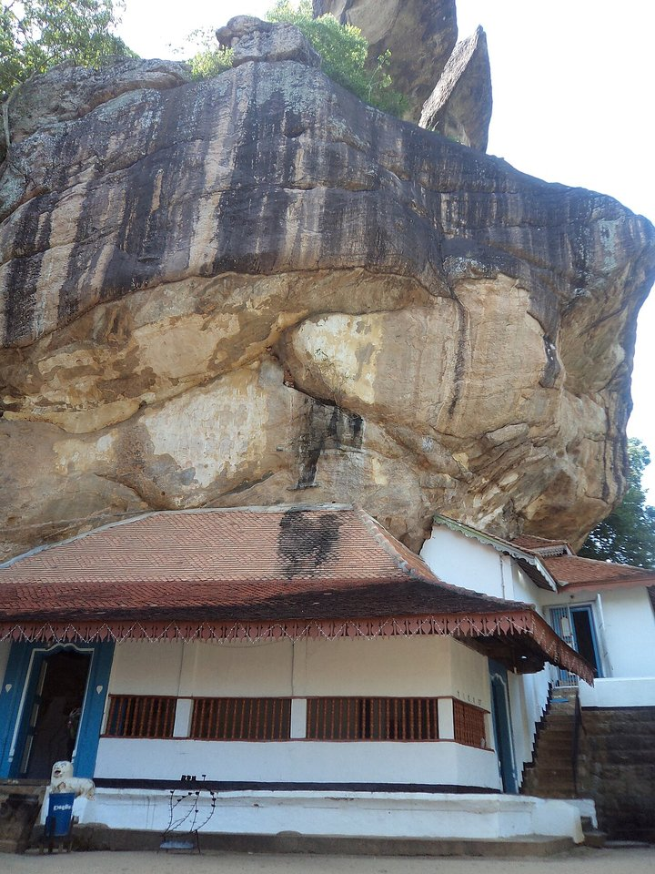
Ancient CitiesAn ancient 2nd-century BCE rock cave monastery founded where a miraculous silver vein was discovered to finance the construction of the Great Ruwanwelisaya stupa.
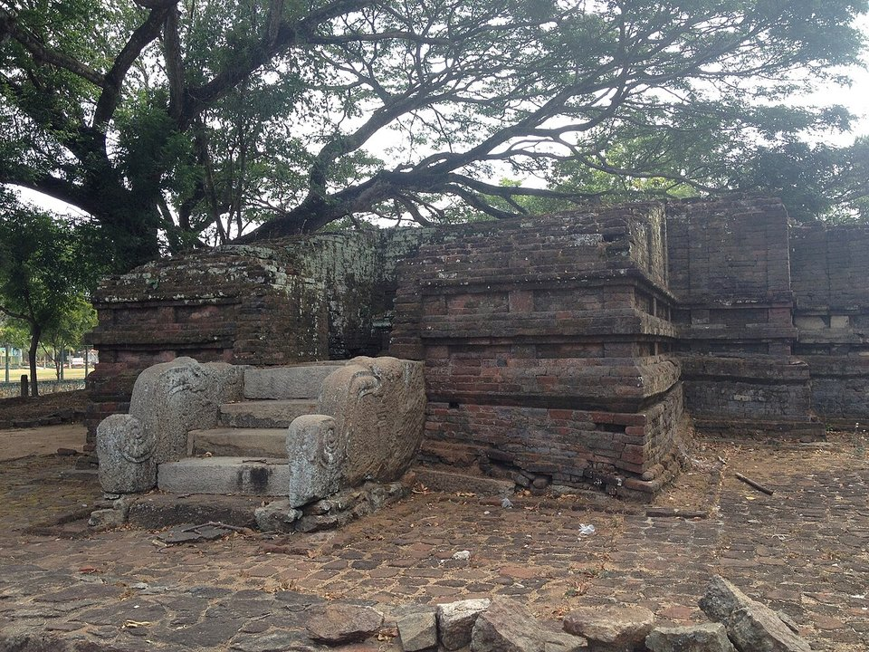
Ancient CitiesA 12th-century medieval royal capital covering 20 hectares, featuring a royal palace with stone baths, moats, and the mysterious circular tower of Princess Unmada Chitra.
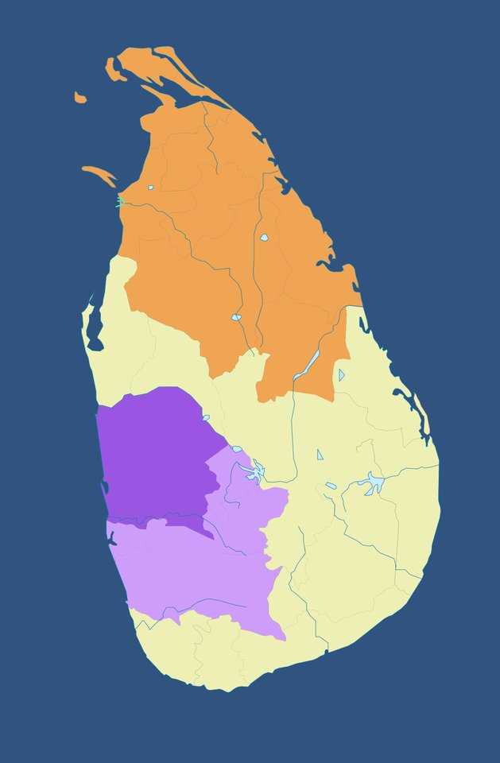
Ancient CitiesThe 13th-century cliff-top kingdom founded by King Vijayabahu III, featuring royal palace foundations, water ponds, and the historic Vijayasundararamaya temple.
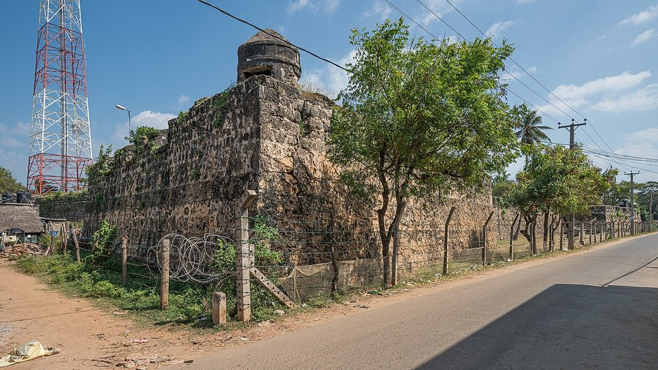
Historical SitesA 1676 Dutch fortress constructed of coral and limestone, built to dominate the lucrative cinnamon and areca-nut trade in the Puttalam Lagoon.
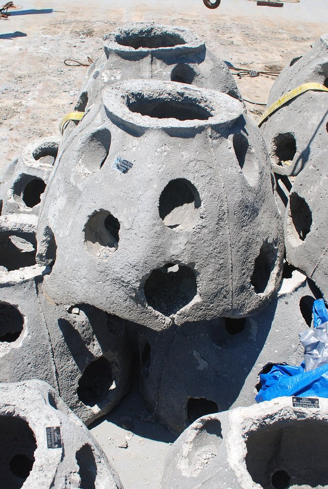
Marine & Diving AttractionsThe largest and most biodiverse coral reef system in Sri Lanka, spanning 307 square kilometers of pristine offshore coral gardens, manta rays, and reef sharks.
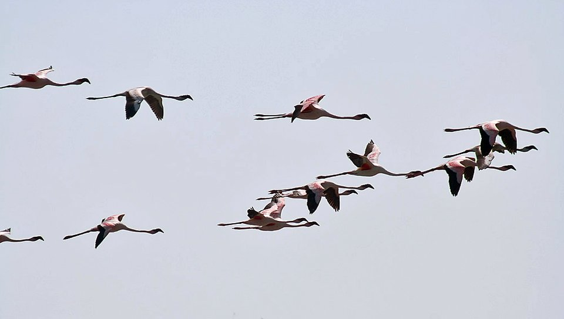
Forests & Nature ReservesA magnificent 1,397-hectare Ramsar wetland of seven ancient cascading irrigation tanks dating back to the 12th century, harboring over 150 bird species.
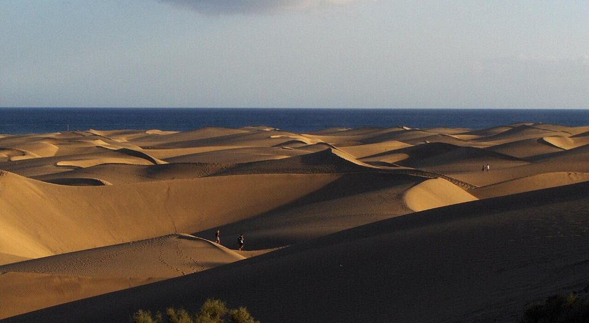
Beaches & CoastlinesA windswept, peaceful 2-kilometer golden beach on the Kalpitiya peninsula, famous for rustic eco-lodges, wind power turbines, and direct boat safaris for dolphin watching.